Advanced Notes on Accessing Testbeds using SSH
Please first see the guide on interacting with your nodes. The rest of the notes on this page relate to specific operating systems and specific, advanced, uses of SSH.
Each node on the testbed is reachable via SSH. DETERLab nodes are not accessible directly from the internet. In order to log into your nodes, you must first log into '''users.deterlab.net''' using your DETER username (not your email address) and password (or your SSH public key). From users you can log into your nodes. To save on connections, you might want to look into using GNU screen on users. Also refer to the Tips and Tricks section below for ways to make accessing DETER easier.
Uploading files to DETER
You can upload files to users.deterlab.net via SCP or SFTP. Files in your home directory and in your project directory will be made available to you on all of your testbed nodes via NFS. Linux directions are given in the guide on interacting with your nodes.
An Example Session with Windows and Putty
Putty is a free, lightweight SSH client for Windows. Here is an example session in which I connect to my experimental node "node0" in my experiment "jjh-ubuntu1004" in the project "DeterTest".
First we connect to '''users.deterlab.net''':
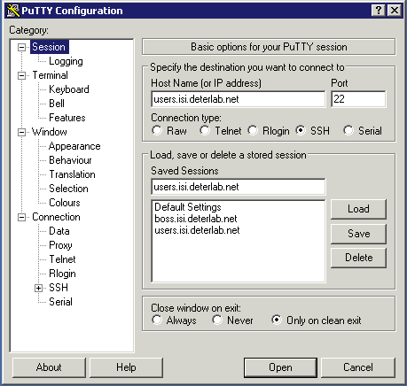
We then enter in our just our username and password (the same password as the DETERLab web interface). Trying to use your email address or something like jjh@users.deterlab.net will '''not''' work:
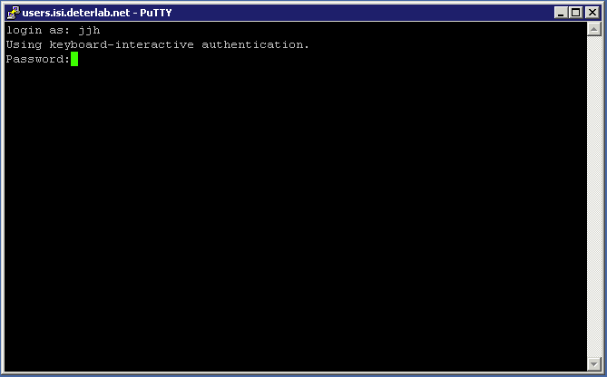
Now we have successfully logged into users.deterlab.net:
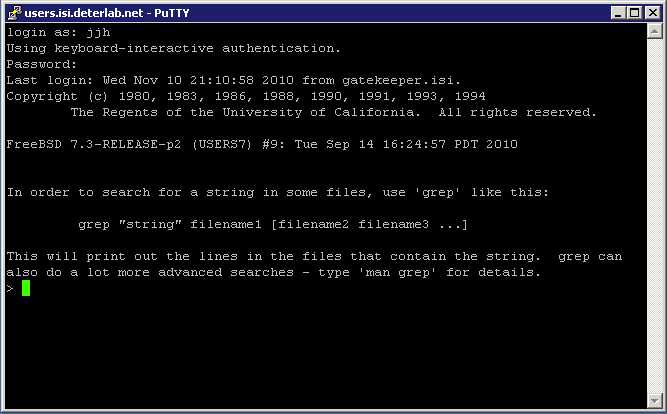
From users, we now ssh into our experimental node, "node0.jjh-ubuntu.detertest":
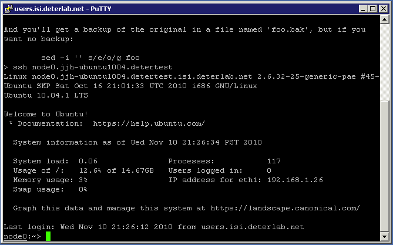
SSH port forwarding
If you are, for example, running an internal web server on one of your DETER nodes, you can access it via SSH through users. You can find the name of the node in MyDeterlab view for your experiment (see the red oval in the picture below).
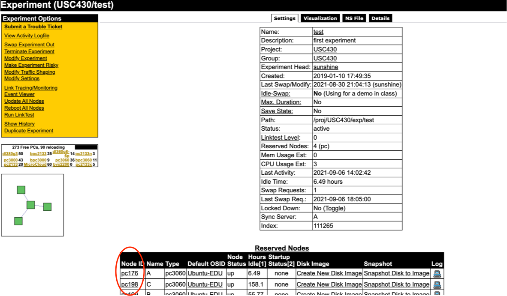
For example to redirect port 80 on node A (pc176) to your local machine on port 8080 you would do:
ssh -L 8080:pc176:80 YourUsername@users.deterlab.net
Once logged in, you should be able to access the web server on your DETER node by going to http://localhost:8080. For more information on port forwarding with SSH, please refer to the SSH man page.
SSH port forwarding with Putty
To use putty for port forwarding, configure putty to open a connection to users.deterlab.net
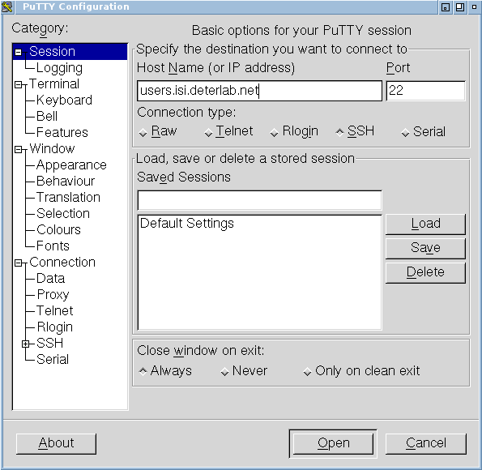
before you make that connection, set up the tunneling parameters. This example forwards local port 12345 to a remode desktop protocol server (port 3389) on a testbed node. select the Tunnels menu from under the SSH choice in the Connection menu on the left hand side. Add a forwarded port using the Local type, a local port number (12345 in the image) and the DETER hostname and port in the Destination field. In the example we are forwarding the connection to port 3389 (the remote desktop protocol) on pc102.
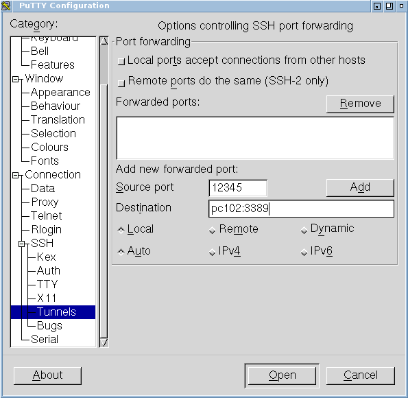
Be sure to press Add to add the port. The putty window will look like this:
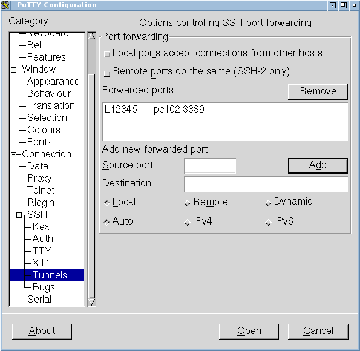
Now open that connection. You will see a login prompt, and you should log in to users.
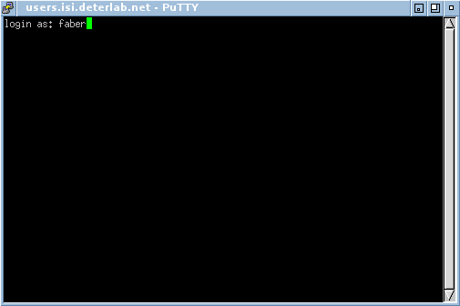
Now you should be able to point your local remote desktop viewer to localhost port 12345 and see the login screen of pc102. If the node is a Windows node, you will see something like this:
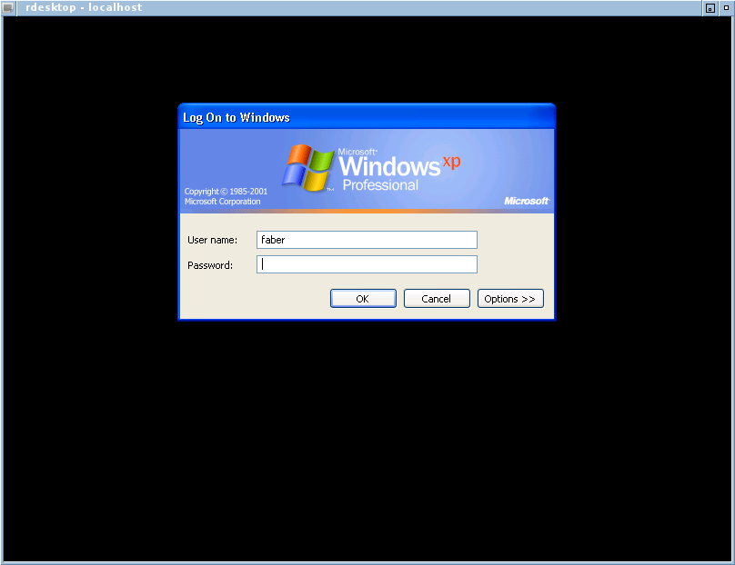
Be sure that your local machine does not firewall the local port 12345. Replace pc102 with a node in your experiment and the forwarded port with the port your service uses.
Uploading your SSH key from OS X
The Upload File dialog in Macintosh OS X does not show hidden directories by default. This creates and extra hassle when uploading SSH public keys from an OS X machine.
In the "Upload File" dialog, use the shortcut '''Shift-Command-G''' and type in "~/.ssh" to navigate to the contents of your .ssh directory.

Then you will be presented with the contents of your .ssh directory and will be able to upload your id_rsa.pub file to DETER:
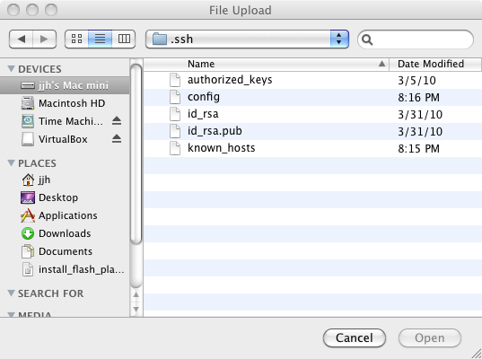
OpenSSH Configuration for Directly Logging into testbed nodes
These configuration tweaks should work for any operating system that runs OpenSSH (Linux, BSD, and OS X typically use OpenSSH as the default SSH client).
It is possible to log directly into testbed nodes with a little SSH configuration tweaking. Adding the following statement to '''~/.ssh/config''' will allow you to skip logging into users in order to access a particular testbed node. Change MyProject to the name of your project.
Host pc*.isi.deterlab.net
ProxyCommand ssh users.deterlab.net nc %h %p
StrictHostKeyChecking no
Host *.MyProject.isi.deterlab.net
ProxyCommand ssh users.deterlab.net nc %h %p
StrictHostKeyChecking no
With this configuration change and a proper SSH key setup, you will be able to directly log into nodes in your experiment.
You will now be able to log into nodes in your experiment using either the actual node name, e.g. pc025.isi.deterlab.net, or YourNode.YourExperiment.YourProject.isi.deterlab.net.
For example:
jjhs-mac-mini:~ jjh$ ssh node0.jjh-ubuntu1004.DeterTest.isi.deterlab.net
Warning: Permanently added 'node0.jjh-ubuntu1004.detertest.isi.deterlab.net' (RSA) to the list of known hosts.
Linux node0.jjh-ubuntu1004.detertest.isi.deterlab.net 2.6.32-25-generic-pae #45-Ubuntu SMP Sat Oct 16 21:01:33 UTC 2010 i686 GNU/Linux
Ubuntu 10.04.1 LTS
Welcome to Ubuntu!
* Documentation: https://help.ubuntu.com/
System information as of Wed Nov 10 20:41:19 PST 2010
System load: 0.0 Processes: 116
Usage of /: 12.3% of 14.67GB Users logged in: 0
Memory usage: 1% IP address for eth1: 192.168.1.26
Swap usage: 0%
Graph this data and manage this system at https://landscape.canonical.com/
4 packages can be updated.
2 updates are security updates.
Last login: Wed Nov 10 20:13:15 2010 from users.deterlab.net
node0:~>
Accelerating Multiple Connections using OpenSSH Connection Multplexing
You can log in multiple times using the same SSH connection. This dramatically speeds up creating new connections. To enable SSH connection multiplexing, add the following lines to ~/.ssh/config. If you are on a multiuser machine, you may want to store the control socket someplace other than /tmp.
Host users.deterlab.net
ControlMaster auto
ControlPath /tmp/%r@%h:%p
To verify that it is working, you can use the '''-v''' option:
jjhs-mac-mini:~ jjh$ ssh -v pc026.isi.deterlab.net
OpenSSH_5.2p1, OpenSSL 0.9.8l 5 Nov 2009
debug1: Reading configuration data /Users/jjh/.ssh/config
debug1: Applying options for *isi.deterlab.net
debug1: Applying options for pc*.isi.deterlab.net
debug1: Applying options for *
debug1: Reading configuration data /etc/ssh_config
debug1: auto-mux: Trying existing master
Last login: Wed Nov 10 20:51:43 2010 from users.deterlab.net
node0:~>
If you try to close your master connection while other connections are active, the connection will stay running until the other sessions end.